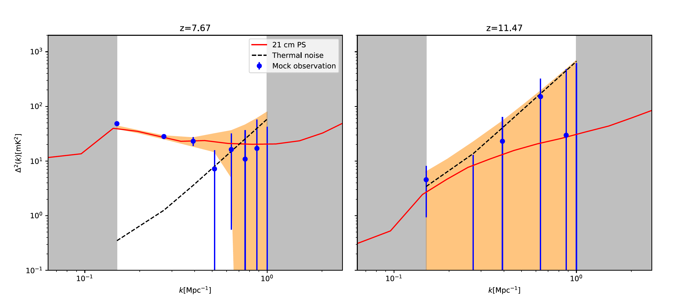
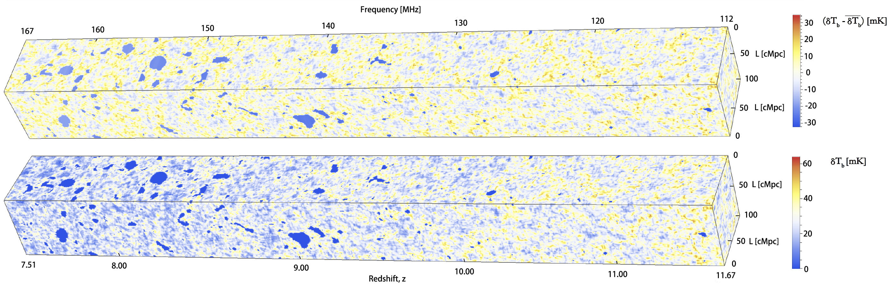

21 cm power spectrum and parameter uncertainty with machine learning
Zhao, X., Mao, Y., & Wandelt, B. D. 2022. Implicit Likelihood Inference of Reionization Parameters from the 21 cm Power Spectrum.

An example of the 21 cm power spectrum
In this work, we apply the DELFI to the 21 cm power spectrum. Realistic effects including thermal noise and foreground avoidance are also applied to the mock observations from the HERA and SKA.
3D 21 cm lightcone and parameter uncertainty with machine learning
Zhao, X., Mao, Y., Cheng, C., & Wandelt, B. D. 2022. Simulation-Based Inference of Reionization Parameters From 3D Tomographic 21 cm Lightcone Images

An illustration of the lightcone datacube of 3D 21 cm images
In this work, We perform a Bayesian inference of the reionization parameters where the likelihood is implicitly defined through forward simulations using density estimation likelihood-free inference (DELFI), where we further adopt a trained 3D Convolutional Neural Network (CNN) to compress the 3D image data into informative summaries (DELFI-3D CNN).